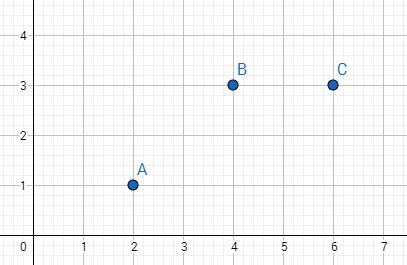

机器学习入门---线性代数篇
撰写：CHEN HUAIZHEN
联系邮箱：1520498543@qq.com
完成时间：2017-9-17
10. AX=b无解
乍看下，这个问题之前不是提过么？AX=b什么时候无解，可以从行空间消元分析，也可以从秩来分析解的情况。但是今天要讲的是即使AX=b无解，那么求出一个最接近的解也是可以的。问题是怎么求？
这时有人会问为什么要求一个接近的解，我们来举个机器学习常见的例子，比如有三个点A(2,1),B(4,3),C(6,3)，那如果有一个点D其横坐标为7，那么其纵坐标最有可能是多少？
首先看下A，B，C的点的分布情况：

接着我们需要的是用一条直线来模拟出其点分布的趋势，那么哪条直线能更好地解释这个趋势呢？
很明显的，下面这条直线最能表现出该分布的趋势：
那么该直线在数学里面的解释是什么？该直线离各点的距离和最短的。